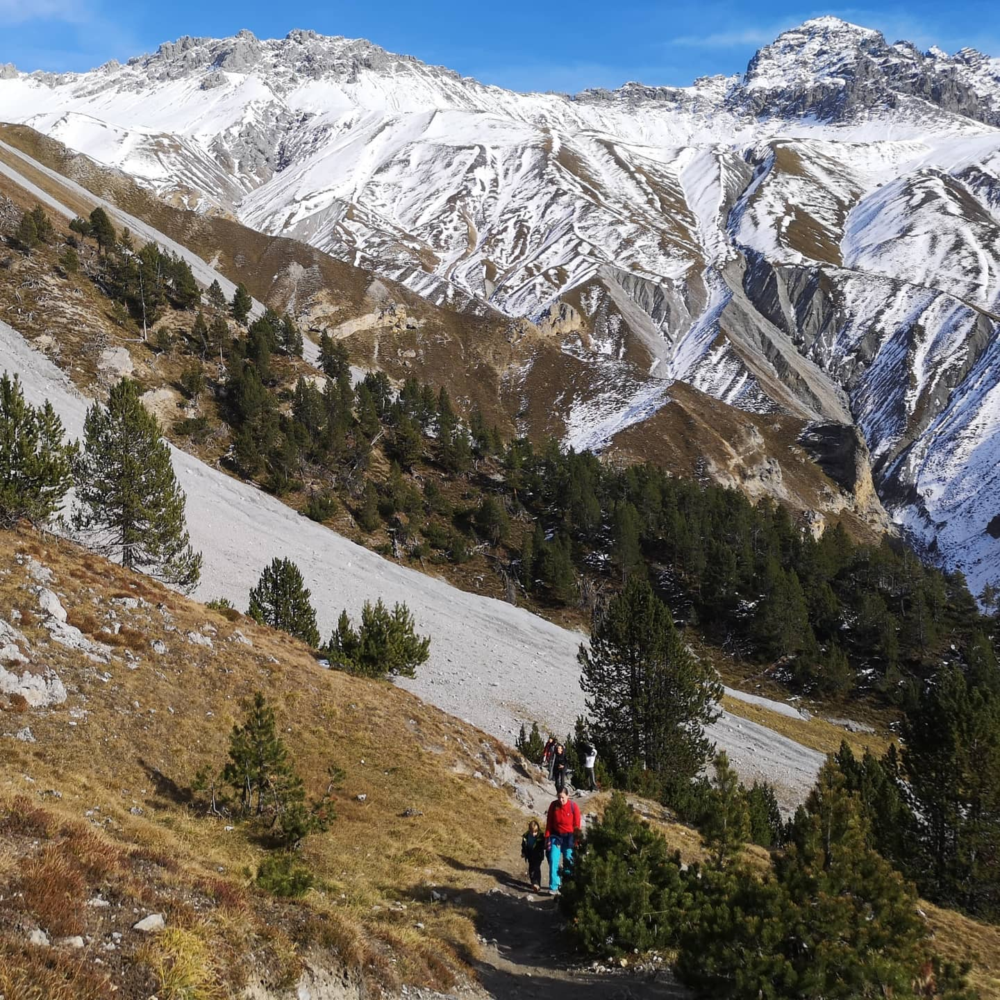
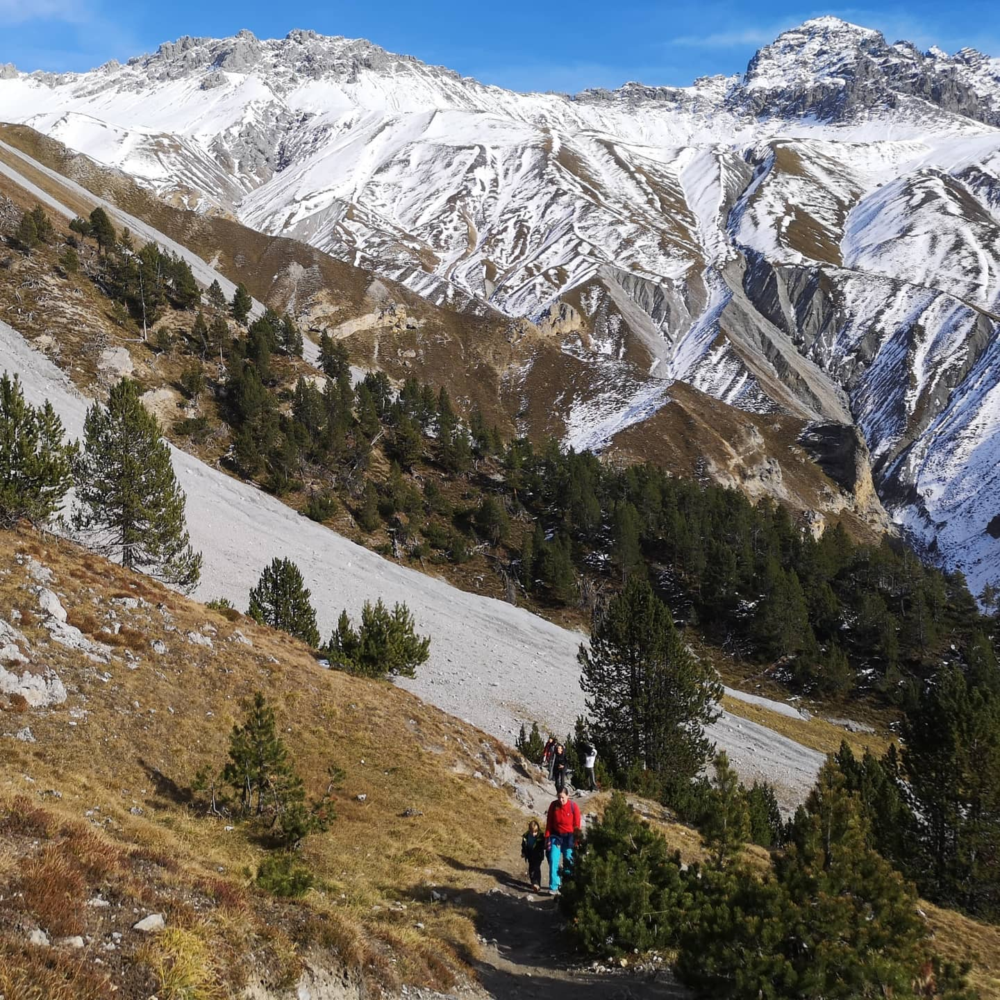
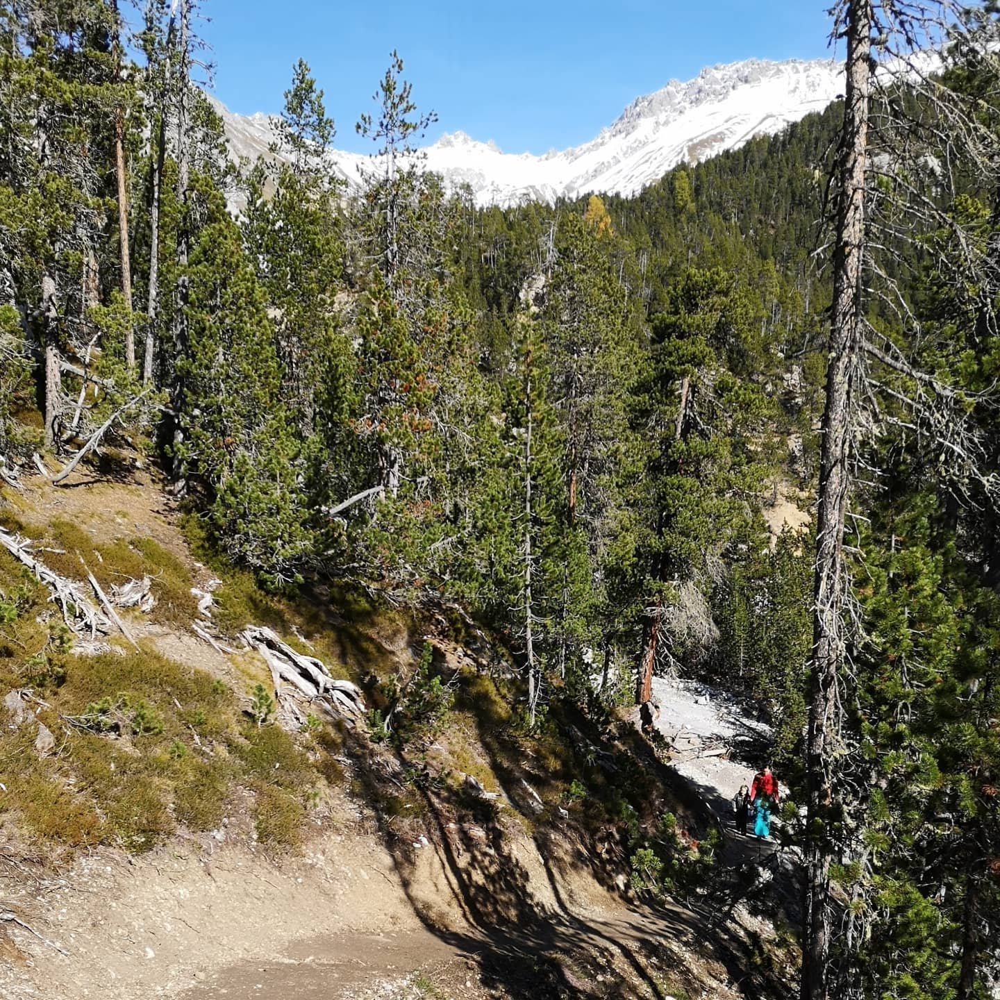
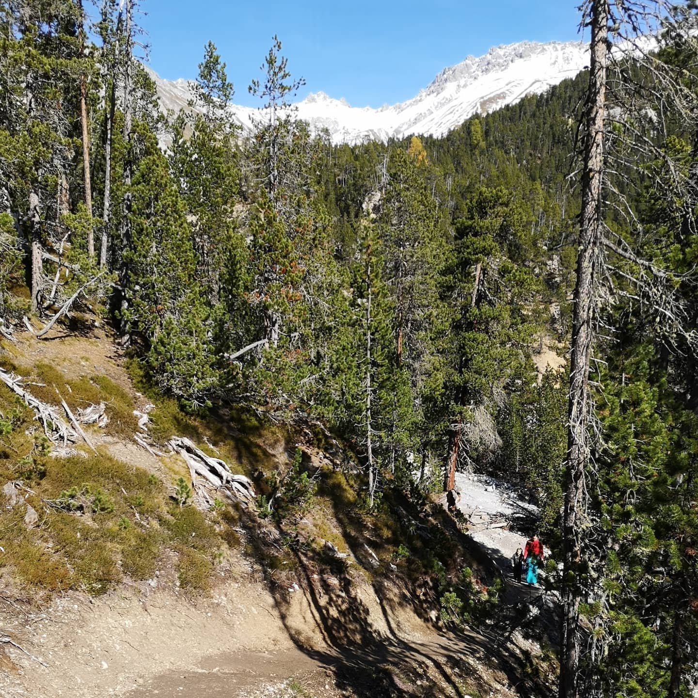

The most beautiful nature you can arguably see in Switzerland. Our national park is a 170km2 area...
Imported from Instagram.
The most beautiful nature you can arguably see in Switzerland. Our national park is a 170km2 area of fully protected and decivilized alpine nature. There is no management at all. Previously extinct animals like bear, lynx and wolf have made their way back to Switzerland thanks to it. This year marks the first time in over 100 years that all the three of them have been sighted here in the same year.


 


 
